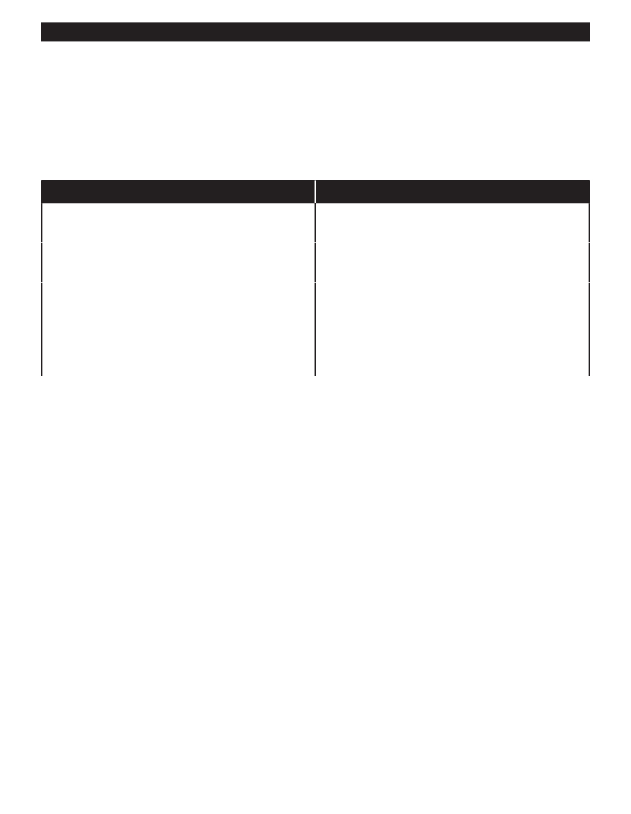

PA RT I C I PA N T R E S O U R C E G U I D E
Common Faucet Problems and Solutions
Most faucet problems relate to the problem of leaking, and are relatively easy to fix,
thanks to the wide range of replacement parts and repair kits available.
The techniques for repair vary, based on the design of the faucet.
Problem
Solution(s)
Low water pressure or erratic water flow from
Clean aerator. (Page 24.)
faucet.
Faucet leaks at base or the spout drips.
Identify faucet type: Ball, cartridge, disc or compression.
Then replace worn part(s). (Pages 25 – 34.)
Leaks continue after worn parts have been replaced.
Replace faucet. (Page 35.)
Water under cabinet or on floor.
Tighten connections to faucet.
Fix leaky sink strainer. (Page 36.)
Seal faucet to counter top with plumbers putty or
caulking. (Page 35.)
23